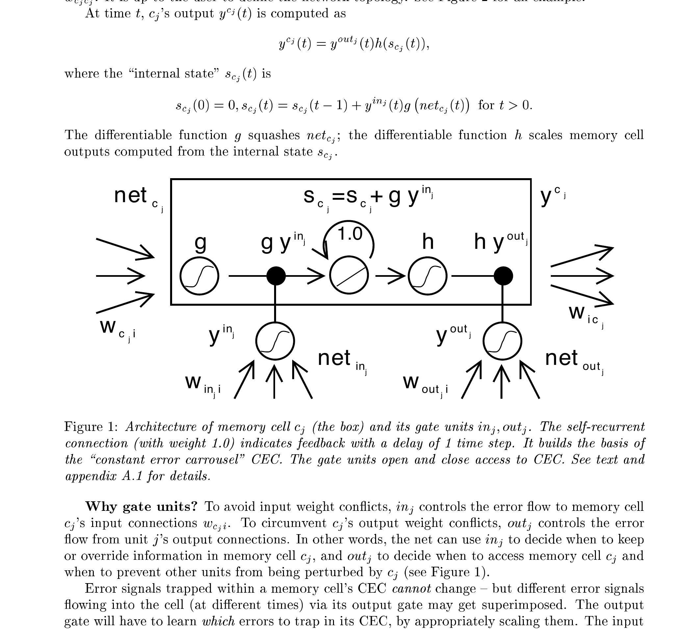
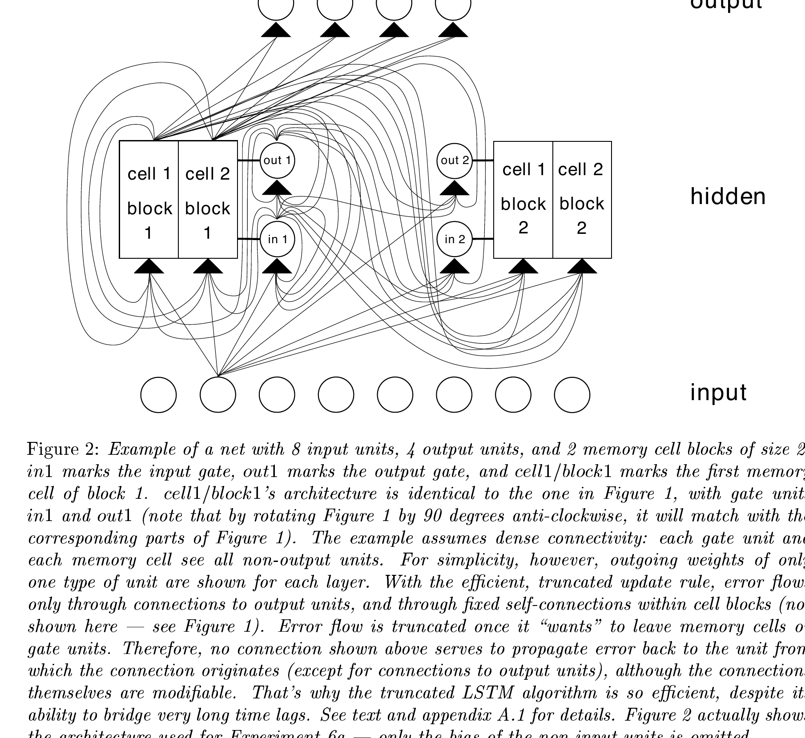
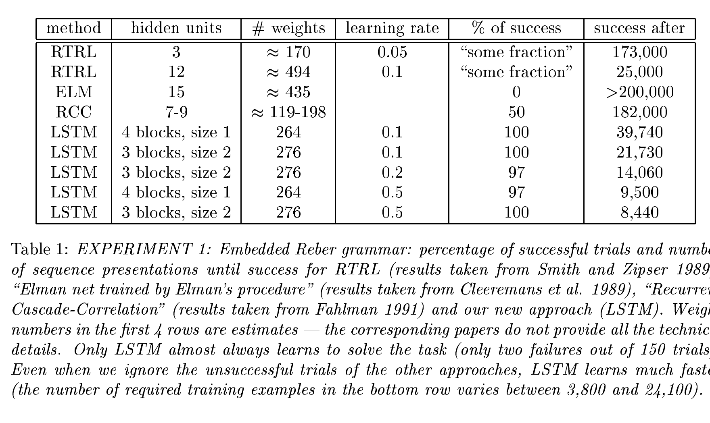
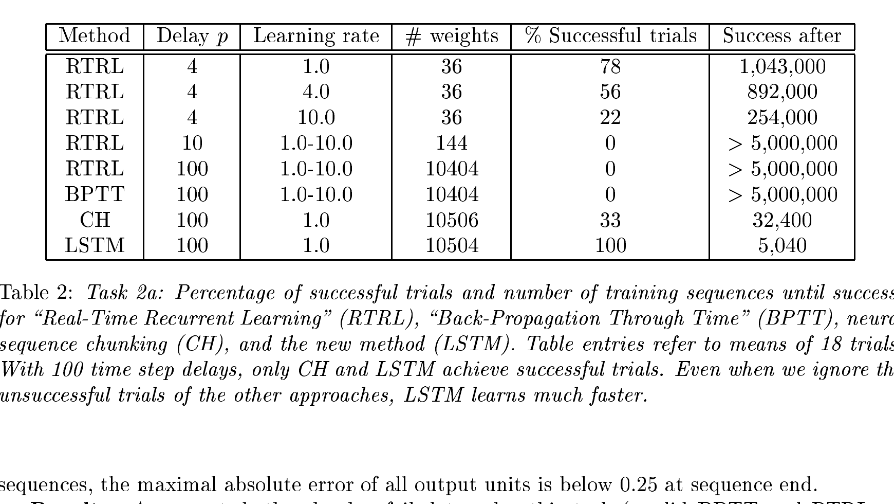
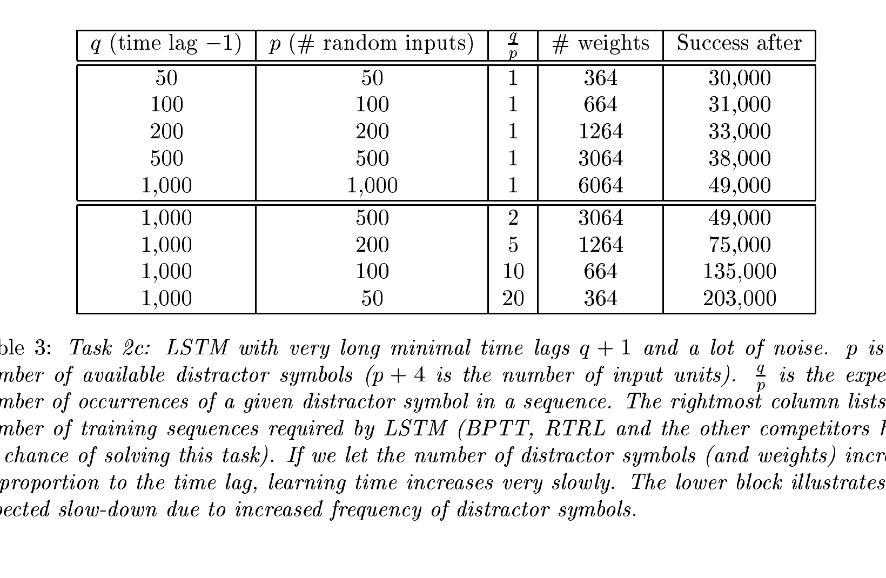

Recurrent memory and long-range credit
How can a sequence model remember a signal for hundreds of steps?
Long Short-Term Memory protects a memory value and the error signal that teaches it. Its gates decide when to write and when to expose—not merely when to forget.
1 · The long-delay problem
A repeated derivative can erase yesterday’s evidence.
An ordinary recurrent network reuses one state update at every time step. To learn that an event at time 1 mattered at time 101, its error signal must travel through 100 such updates. That means multiplying many derivatives and weights. Values below one shrink; values above one grow.
A self-loop with weight exactly 1 can carry a value and its direct error derivative unchanged. But a bare loop cannot decide when new input should overwrite it, or when stored content should be visible. LSTM gives those decisions to learned gates.
2 · A protected carry lane
One state persists; two gates control access.
| Source quantity | Meaning | Role |
|---|---|---|
| sc(t) | Internal cell state | The protected carry lane, initially zero. |
| yin(t) | Input-gate activity | How much candidate content may be written. |
| yout(t) | Output-gate activity | How much stored content becomes visible. |
| g(netc) | Candidate content | What the cell could add this step. |

3 · Worked trace A
Write a little, hide it, then reveal it.
Use the paper’s state rule with prior state 2.0, candidate .8, input gate .25, and identity readout.
The small input gate protects what was already stored. The small output gate hides it without deleting it. A large output gate later makes the still-present state useful.
Predict before reveal: does output gate 0 erase the cell state?
No. It blocks the cell’s visible output; the state update is controlled by the input gate. In this source architecture, the CEC still carries the stored state forward.
4 · Worked trace B
The CEC is an error conveyor, not a promise that all gradients are easy.
On the direct unperturbed CEC path, the state-to-state derivative is 1. If ∂L/∂st+3=1.00, then the direct contribution to ∂L/∂st remains 1×1×1×1=1.00. Compare an ordinary recurrent factor .7:
5 · Evidence
What did the paper’s experiments show?




6 · Misconceptions and recall
Keep the historical LSTM distinct from its descendants.
Does the original 1997 LSTM contain a forget gate?
No. Its source architecture uses a CEC plus input and output gates. The commonly taught forget gate was introduced later.
Why does plain recurrence lose long-range credit?
Back-propagated sensitivity repeatedly multiplies local derivatives and weights, so it commonly shrinks or grows exponentially with delay.
What does the output gate control?
Exposure of stored state, not deletion of it. The input gate controls new writing in the displayed source equations.
What precise claim does Table 2 support?
In the reported 100-step-delay task, LSTM succeeded where the listed BPTT/RTRL runs did not. It does not prove LSTM wins on every sequence task.
7 · Connect it to your mental map
A small internal notebook between simple recurrence and external memory.
Yesterday’s back-propagation lesson explains why repeated derivatives make long credit hard. LSTM redesigns one recurrent route so the direct error signal can persist. Neural Turing Machines extend the same memory idea outward: their controller reads and writes a larger addressable store. Transformers take a different route, using attention to access distant token representations directly rather than forcing all history through one fixed-size recurrent state.
Takeaway
LSTM does not remember by accident.
A protected state line carries a value and a usable error path forward. Input and output gates make that persistence selective: write when a cue matters, expose it when the task needs it.